Gerçek cihaz: Kısmi — panel İptal akışı, klavye, müşteri kategorisi ve arama fiziksel telefonda denendi.
Cihaz: 26012RN62Y, Android 16, Chrome 156.0.8078.79, fiziksel 1080x2396 px / 450 dpi; CSS 384x737 (Chrome viewport); screen 384x852; DPR 2.8125.
| Viewport | Kategori | Ürün | Durum |
|---|---|---|---|
| 320×560 | 5 / 2 satır | 8 | PASS |
| 320×720 | 5 / 2 satır | 8 | PASS |
| 390×844 | 5 / 2 satır | 8 | PASS |
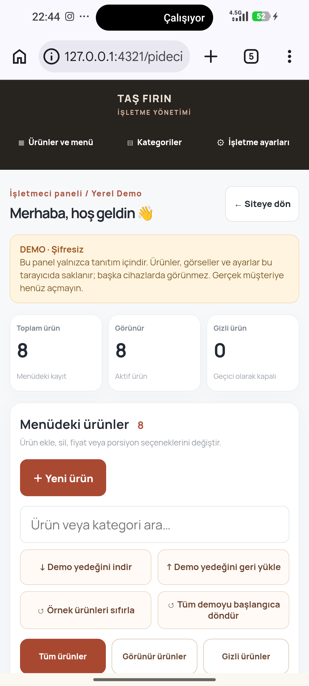
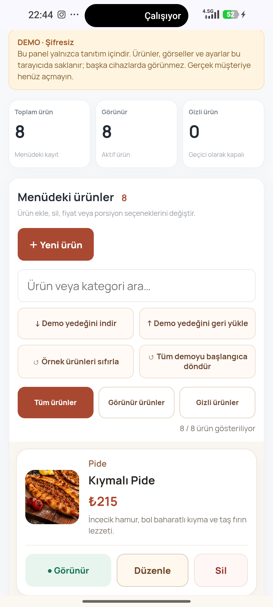
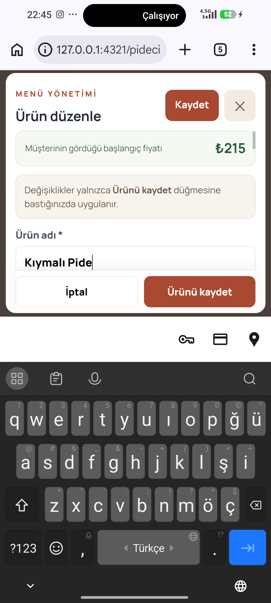
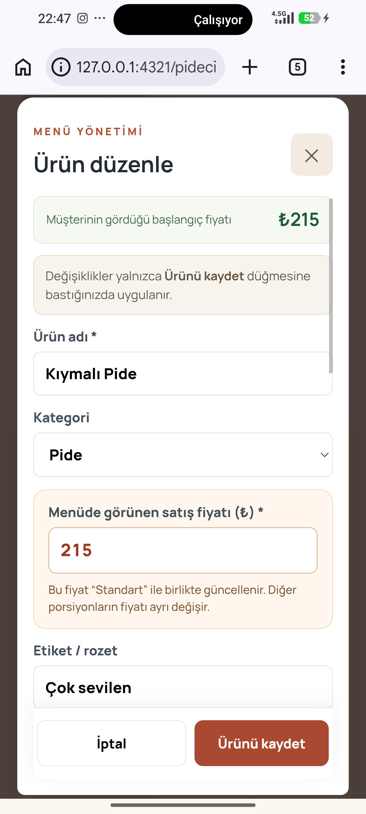
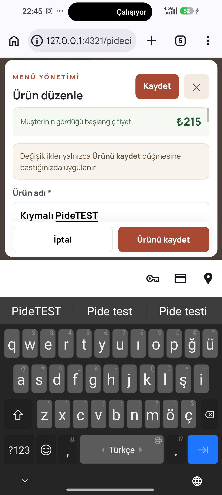
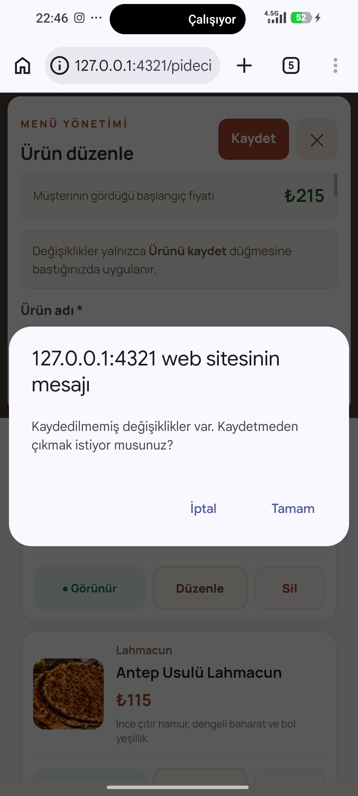
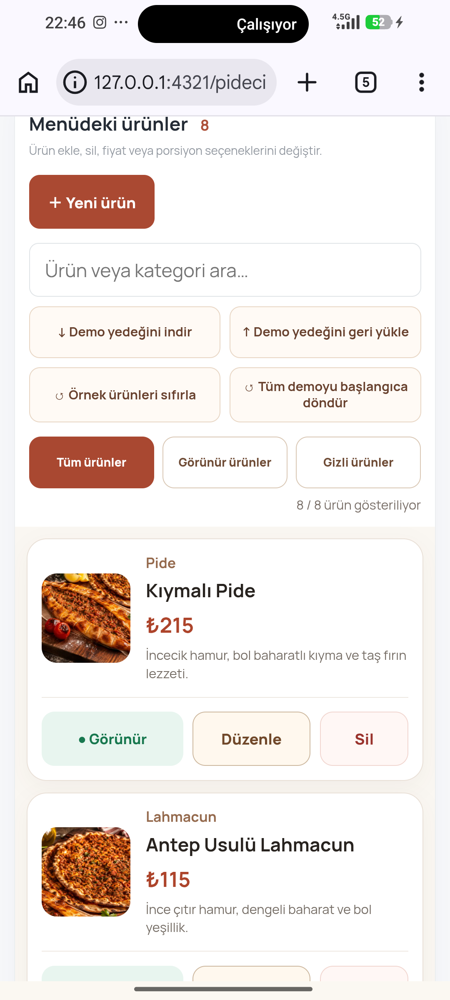
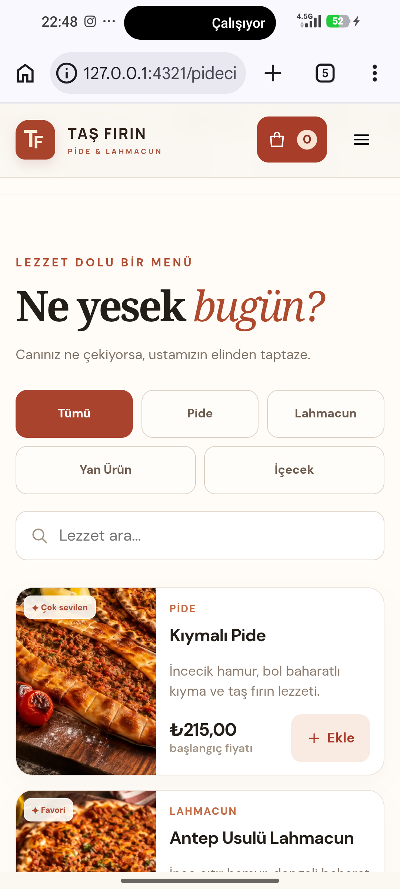
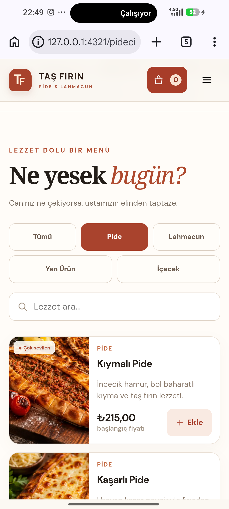
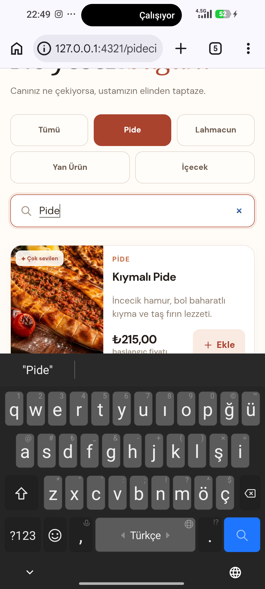
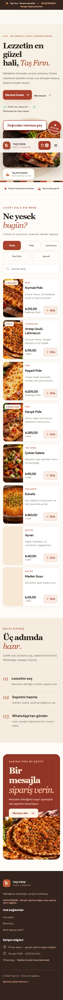
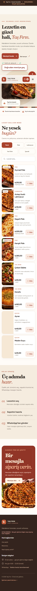
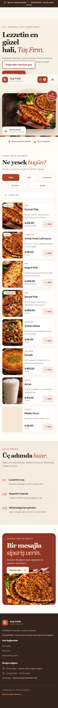
# G4.1.9 Android Test Raporu ## Ortam - Proje: `C:\Users\PC\TasFirin-G418-Test` - Sunucu: `http://127.0.0.1:4321/pideci-lahmacuncu-demo/` - Telefon: 26012RN62Y, Android 16, Chrome 156.0.8078.79 - Fiziksel ekran: 1080x2396, 450 dpi - CSS viewport: 384x737 (Chrome viewport); screen 384x852; DPR 2.8125 ## Playwright emülasyonu | Viewport | Kategori | Ürün | Sonuç | |---|---:|---:|---| | 320×560 | 5 (2 satır) | 8 | PASS | | 320×720 | 5 (2 satır) | 8 | PASS | | 390×844 | 5 (2 satır) | 8 | PASS | Arama ve kategori seçimi üç viewport’ta PASS. 5 filtre düğmesi 3+2 görünümde. Yatay taşma yok; ürün açıklamalarında emülasyonda taşma görülmedi. ## Gerçek Android **Sonuç kısmi.** ADB cihazı 26012RN62Y, Android 16, Chrome 156.0.8078.79; fiziksel 1080x2396 px / 450 dpi. 384x737 (Chrome viewport); screen 384x852; DPR 2.8125. Panel listesi ve editör açıldı. Klavye açıldı/kapatıldı. Ada TEST ekleyip İptal ettim; uyarı onayından sonra ürün özgün ada döndü. Kaydet/İptal görünür ve çakışmıyor. Müşteri sayfasında 5 filtre düğmesi 3+2 dizildi; Pide dokunması ve araması 3 ürün verdi. Aşağı kaydırarak porsiyon/ekstra alanlarını kontrol etme, kontrollü kaydetme, uzun isim, 7/8 kategori testleri BELİRSİZ. Fiziksel cihaz sonuçları emülasyonla birleştirilmedi. ## Kategori senaryoları - 5 filtre düğmesi (Tümü dahil): Gerçek telefon ve Playwright’ta Tümü dahil 5 filtre düğmesi, 3+2 satır. - 7 kategori: BELİRSİZ: izole senaryo çalıştırılmadı. - 8 kategori: BELİRSİZ: izole senaryo çalıştırılmadı. ## Güvenlik ve kapsam - Site kaynak dosyaları değiştirilmedi; build ve proje testleri çalıştırılmadı. - Fiziksel ekran çözünürlüğü değiştirilmedi. GitHub’a yükleme yapılmadı. - Tüm Android PNG kanıtları ADB pull ile alındı; dosya başına Windows görüntü çözücüsüyle 1080×2396 olarak açıldığı doğrulandı. ## Kanıt dosyaları - `G419_Test_Kanitlari/android-panel-initial.png` - `G419_Test_Kanitlari/android-panel-products.png` - `G419_Test_Kanitlari/android-panel-editor-keyboard.png` - `G419_Test_Kanitlari/android-panel-keyboard-hidden.png` - `G419_Test_Kanitlari/android-panel-test-edit.png` - `G419_Test_Kanitlari/android-panel-cancel-confirm.png` - `G419_Test_Kanitlari/android-panel-cancelled.png` - `G419_Test_Kanitlari/android-panel-editor-keyboard.png` - `G419_Test_Kanitlari/android-panel-editor.png` - `G419_Test_Kanitlari/android-storefront-menu.png` - `G419_Test_Kanitlari/android-storefront-pide.png` - `G419_Test_Kanitlari/android-storefront-search.png` - `G419_Test_Kanitlari/android-storefront-menu.png` - `G419_Test_Kanitlari/playwright-320x560.png` - `G419_Test_Kanitlari/playwright-320x720.png` - `G419_Test_Kanitlari/playwright-390x844.png`